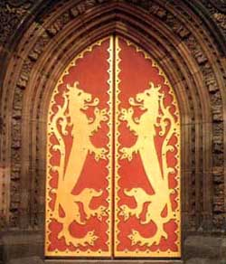
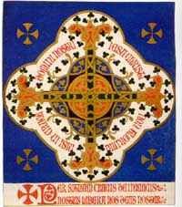
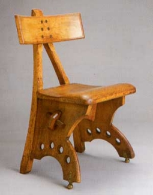

Augustus Pugin was the leading figure in the revival of the Gothic style which became increasingly important throughout the nineteenth century, gradually replacing Classical styles in popularity. The Arts and Crafts movement has its roots in the Gothic revival and this page gives a brief guide to Gothic style and its influence.

Kenneth Clarke writing of the Gothic revival said:
It changed the face of England, building and restoring churches all over the countryside, and filling our towns with Gothic banks and grocers, Gothic lodging houses and insurance companies, Gothic everything from a town hall to a slum public house..
Gothic is a term used to describe a style of European Architecture which begin in the late twelfth century and dominated building design in Europe until the sixteenth. The wealth and power of the church at that time provided the money and the inspiration to build great churches and these are most common, though not the only, kind of Gothic building which also includes civic buildings, university buildings, hospitals and town houses.
The Gothic style uses certain architectural design patterns to enable the creation of soaring spaces lit by numerous large windows. Architecture before the Gothic age had used thick walls to bear the structural load of a building. An important characteristic of Gothic building was to treat only narrow portions of the walls as load-bearers, enabling the rest of the wall to be punctured by windows. Buttresses were also widely used, further reducing the need for thick walls and allowing spaces of great height to be achieved. Windows were normally pointed which enabled them to be larger and higher than curved-arch windows, thus giving more light and, with the use of stained glass, colour to the interior.
Gothic architecture evolved through experiment and inspiration and relied upon the highest levels of skill and creativity from craftsmen. Religion was the major driving force for the masons and carvers who created these great buildings, they 'exercised their talents in the service of God '. Their work was inspired and uplifting in itself and nineteenth century Gothic revivalists supposed that these craftsmen also enjoyed a sense of freedom and creativity, moving around the country as buildings were completed and new churches were commissioned.
The European Renaissance led to the Gothic style being overtaken by classical models, and Renaissance writers tended to denigrate the previous style as archaic, uncivilised, even barbaric (the word 'Gothic' was originally an insult, associating the style with German tribes who had ransacked Rome). Classical styles were based on elements found in ancient Greek and Roman architecture, including strict proportions, columns from a limited stock of orders, colonnades, domed roofs, and other features. In various forms and degrees of adherence to its fundamental principles, classicism dominated architecture in Britain until well into the nineteenth century.
As industrialisation progressed in Britain, so to did a reaction against machine production and the appearance of factory buildings. By 1834 Thomas Carlyle and Augustus Pugin had established a critical view of industrial society in their writing and had started to point back to pre-industrial medieval society as a golden age. To Pugin, Gothic architecture was infused with the high Christian ideals and values that had been eclipsed by classicism and were being destroyed by industrialisation.
Pugin's two 'great rules' for design.
Pugin's definition of the two great rules for design, defined the real nature of Gothic, and were to become the most important influence on the Arts and Crafts movement. These principles were:
-
First that there should be no features about a building which are not necessary for convenience, construction or propriety.
-
Second, that all ornament should consist of the essential construction of the building.
Pugin applied his vision to the whole field of design. As well as his work in the design of buildings he designed furniture, and from his architectural practice he also designed and produced stained glass, metalwork, textiles and jewellery. The Gothic revival architects who followed Pugin, notably William Burges and George Edward Street carried on the new approach to furniture design, taking responsibility for designing the building and its internal fittings and furnishings.
The revival of Gothic style was also the work of John Ruskin, an architectural critic who attacked classical architecture because of its aim for perfection and for its demands upon the men who were required, as slaves to build it. For Ruskin, Gothic was the architecture of free craftsmen. Their work being a natural and noble activity where the result might not have a perfect machine finish but it was an honest creation. This notion of natural and honest imperfection was called 'Savageness' and was very influential in the Arts and Crafts movement. Ruskin believed also that human needs should dictate how buildings were designed and craftsmen should be free to adapt and to change rather than follow a rigid style. This principal of 'Changefullness' was also an important influence on Arts and Crafts thinking.
From the Gothic revival we can see important influences on the Arts and Crafts Movement. First, the high value placed on craftsmanship creativity and the view that work should be meaningful in itself. Secondly the emphasis on creative design and importance of functional and purpose rather than decoration. Thirdly the integrity and honesty of construction, which relies upon the natural beauty of materials used in construction. In terms of design, important influences included the view that the structure should be exposed so the ingenuity in creating and holding the structure together can be shown honestly and appreciated. The decoration relied largely on the natural beauty of the materials and also on hand crafted work, with organic forms as decoration, reflecting the handiwork of God.

A wider appeal for the Gothic revival developed in the latter half of the nineteenth century as the interpretation of Gothic was much debated. For those in the avant garde, seeking relief from the oppressive classical tradition the new 'Gothick ' was very appealing as it evoked a medieval sense of barbarism, of heroic endeavour and of the heartiness of 'Merry England' in the middle ages. The single most important figure in the development of Arts and Crafts from this time on was, of course, William Morris.
